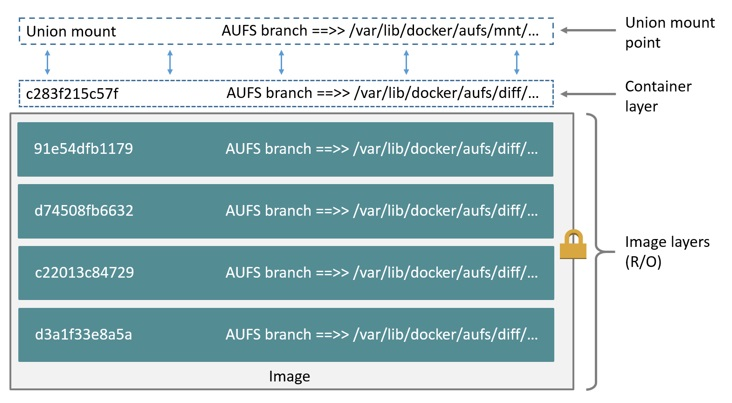

Docker 原理
- Namespace
- Cgroup
- UnionFS
Namespace
| Namespace | 隔离内容 |
|---|---|
| UTS | 主机名与域名 |
| IPC | 信号量、消息队列和共享内存 |
| PID | 进程编号 |
| Network | 网络设备、网络栈、端口等 |
| Mount | 挂载点（文件系统） |
| User | 用户和用户组 |
Cgroup
- blkio: 为块设备设定输入输出/限制，比如物理驱动设备（包括磁盘、固态硬盘、USB等）
- cpu: 使用调度程序控制任务对 CPU 的使用
- cpuacct: 自动生成 cgroup 中任务对 CPU 资源使用情况的报告
- cpuset: 为 cgroup 中的任务分配独立的 CPU 和内存
- devices: 可以开启或关闭 cgroup 中任务对设备的访问
- freezer: 可以挂起或恢复 cgroup 中的任务
- memory: 可以设定 cgroup 中任务对内存使用量的限定，并且自动生成这些任务对内存资源使用情况的报告
- perf_event: 使用后使 cgroup 中的任务可以进行统一的性能测试
- net_cls: Docker 没有直接使用它，它通过使用等级识别符（classid）标记网络数据包，从而允许 Linux 流量控制程序识别从具体 cgroup 中生成的数据包
子系统文件
公共
- tasks: 这个文件罗列所有该 cgroup 中任务的 TID，即所有线程或进程的 ID
- cgroup.procs: 这个文件罗列所有该 cgroup 中的线程组ID(TGID), 及线程组中第一个进程的ID
- notify_on_release: 0或1，表示是否在 cgroup 中最后一个任务退出时通知运行 release agent, 默认0, 表示不运行
- release_agent: 指定 release agent 执行脚本的文件路径，这个脚本通常用于自动化卸载无用的 cgroup
cpu
cpu子系统根据进程设置的调度属性，选择对应的CPU资源调度方法。
1. 完全公平调度 Completely Fair Scheduler (CFS)
限上限，cpu.cfs_period_us, cpu.cfs_quota_us
cpu.cfs_period_us = 统计CPU使用时间的周期
cpu.cfs_quota_us = 周期内允许占用的CPU时间(指单核的时间, 多核则需要在设置时累加)
CFS 用于处理以下几种进程调度策略:
- SCHED_OTHER
- SCHED_BATCH
- SCHED_IDLE
cfs_period_us用来配置时间周期长度, cfs_quota_us用来配置当前 cgroup 在设置的周期长度内所能使用的 CPU 时间数，两个文件配合起来设置 CPU 的使用上限。两个文件的单位都是微秒（us），cfs_period_us的取值范围为1毫秒（ms）到1秒（s），cfs_quota_us的取值大于 1ms 即可，如果 cfs_quota_us 的值为 -1（默认值），表示不受 cpu 时间的限制。
例：
#设置只能使用1个cpu的20%的时间
echo 50000 > cpu.cfs_period_us
echo 10000 > cpu.cfs_quota_us
#设置完全使用4个cpu的时间
echo 1000000 > cpu.cfs_period_us
echo 4000000 > cpu.cfs_quota_us
- 实时调度 Real-Time scheduler (RT)
限实时任务上限，cpu.rt_period_us，cpu.rt_runtime_us
cpu.rt_period_us = 统计CPU使用时间的周期
cpu.rt_runtime_us = 周期内允许任务使用单个CPU核的时间，如果系统中有多个核，则可以使用核倍数的时间 (计算方法与cfs不一样，需要注意)
RT用于处理以下几种进程调度策略
- SCHED_FIFO
- SCHED_RR
- cpu.shares
shares用来设置CPU的相对值，并且是针对所有的CPU（内核），默认值是1024。
假如系统中有两个cgroup，分别是A和B，A的shares值是1024，B的shares值是512，那么A将获得1024/(1204+512)=66%的CPU资源，而B将获得33%的CPU资源。 shares有两个特点： - 如果A不忙，没有使用到66%的CPU时间，那么剩余的CPU时间将会被系统分配给B，即B的CPU使用率可以超过33%
如果添加了一个新的cgroup C，且它的shares值是1024，那么A的限额变成了1024/(1204+512+1024)=40%，B的变成了20%
cpu.stat
包含了下面三项统计结果：
nr_periods： 表示过去了多少个cpu.cfs_period_us里面配置的时间周期
nr_throttled： 在上面的这些周期中，有多少次是受到了限制（即cgroup中的进程在指定的时间周期中用光了它的配额）
throttled_time: cgroup中的进程被限制使用CPU持续了多长时间(纳秒)
memory
cgroup.event_control #用于eventfd的接口
memory.usage_in_bytes #显示当前已用的内存
memory.limit_in_bytes #设置/显示当前限制的内存额度
memory.failcnt #显示内存使用量达到限制值的次数
memory.max_usage_in_bytes #历史内存最大使用量
memory.soft_limit_in_bytes #设置/显示当前限制的内存软额度
memory.stat #显示当前cgroup的内存使用情况
memory.use_hierarchy #设置/显示是否将子cgroup的内存使用情况统计到当前cgroup里面
memory.force_empty #触发系统立即尽可能的回收当前cgroup中可以回收的内存
memory.pressure_level #设置内存压力的通知事件，配合cgroup.event_control一起使用
memory.swappiness #设置和显示当前的swappiness
memory.move_charge_at_immigrate #设置当进程移动到其他cgroup中时，它所占用的内存是否也随着移动过去
memory.oom_control #设置/显示oom controls相关的配置
memory.numa_stat #显示numa相关的内存
#### cpuacct
cpuacct.usage #所有cpu核的累加使用时间(nanoseconds)
cpuacct.usage_percpu #针对多核，输出的是每个CPU的使用时间(nanoseconds)
cpuacct.stat #输出系统（system/kernel mode）耗时和用户（user mode）耗时 ， 单位为USER_HZ。
Storage Driver
aufs(UnionFS)
- 容器启动速度很快
- 存储空间利用很高效
- 内存的利用很高效
读写：写时复制
删除：whiteout 屏蔽
Docker 镜像的各层的全部内容都存储在/var/lib/docker/aufs/diff/<image-id>文件夹下，每个文件夹下包含了该镜像层的全部文件和目录，文件以各层的 UUID 命名。
正在运行的容器的文件系统被挂载在/var/lib/docker/aufs/mnt/<container-id>文件夹下，这就是 AUFS 的联合挂载点，在这里的文件夹下，你可以看到容器文件系统的所有文件。如果容器没有在运行，它的挂载目录仍然存在，不过是个空文件夹。
容器的元数据和各种配置文件被放在/var/lib/docker/containers/<container-id>文件夹下，无论容器是运行还是停止都会有一个文件夹。如果容器正在运行，其对应的文件夹下会有一个 log 文件。
容器的只读层存储在/var/lib/docker/aufs/diff/<container-id>目录下，对容器的所有修改都会保存在这个文件夹下，即便容器停止，这个文件夹也不会删除。也就是说，容器重启后并不会丢失原先的更改。
容器中镜像层的信息存储在/var/lib/docker/aufs/layers/<container-id>文件中。文件中从上至下依次记录了容器使用的各镜像层。

性能表现
- 在容器密度比较告的场景下，AUFS 是非常好的选择，因为AUFS的容器间共享镜像层的特性使其磁盘利用率很高，容器的启动时间很短
- AUFS 中容器之间的共享使对系统页缓存的利用率很高
- AUFS 的写时复制策略会带来很高的性能开销，因为 AUFS 对文件的第一次更改需要将整个文件复制带读写层，当容器层数很多或文件所在目录很深时尤其明显
device mapper
device mapper工作在块层次上而不是文件层次上，这意味着它的写时复制策略不需要拷贝整个文件。
在device mapper中，对容器的写操作由需要时分配策略完成。更新已有数据由写时复制策略完成，这些操作都在块的层次上完成，每个块的大小为64KB。
需要时分配(allocate-on-demand)
每当容器中的进程需要向容器写入数据时，device mapper就从资源池中分配一些数据块并将其映射到容器。当容器频繁进行小数据的写操作时，这种机制非常影响影响性能。
写时复制(copy-on-write)
device mapper的写时复制策略以64KB作为粒度，意味着无论是对32KB的文件还是对1GB大小的文件的修改都仅复制64KB大小的文件。这相对于在文件层面进行的读操作具有很明显的性能优势。但是，如果容器频繁对小于64KB的文件进行改写，device mapper的性能是低于aufs的。
overlayfs(UnionFS)
OverlayFS与AUFS相似，也是一种联合文件系统(union filesystem)，与AUFS相比，OverlayFS：
- 设计更简单
- 被加入Linux3.18版本内核
- 可能更快
OverlayFS 将一个 Linux 主机中的两个目录组合起来，一个在上，一个在下，对外提供统一的视图。这两个目录就是层layer，将两个层组合在一起的技术被成为联合挂载union mount。在OverlayFS中，上层的目录被称作upperdir，下层的目录被称作lowerdir，对外提供的统一视图被称作merged。

OverlayFS 仅有两层，也就是说镜像中的每一层并不对应 OverlayFS 中的层，而是镜像中的每一层对应/var/lib/docker/overlay中的一个文件夹，文件夹以该层的 UUID 命名。然后使用硬连接将下面层的文件引用到上层。这在一定程度上节省了磁盘空间。这样 OverlayFS中 的lowerdir就对应镜像层的最上层，并且是只读的。在创建镜像时，Docker 会新建一个文件夹作为OverlayFS的upperdir，它是可写的。
读写：第一次修改时，文件不在container layer(upperdir)中，overlay driver 调用copy-up操作将文件从lowerdir读到upperdir中，然后对文件的副本做出修改。
overlay的copy-up操作工作在文件层面, 对文件的修改需要将整个文件拷贝到upperdir中。
- copy-up操作仅发生在文件第一次被修改时，此后对文件的读写都直接在upperdir中进行
- overlayfs中仅有两层，这使得文件的查找效率很高(相对于aufs)。
删除：whiteout 覆盖
参考
https://yq.aliyun.com/articles/54483
https://segmentfault.com/a/1190000008323952
https://blog.csdn.net/vchy_zhao/article/details/70238690